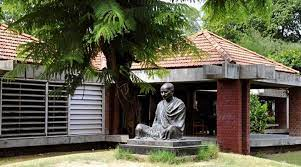
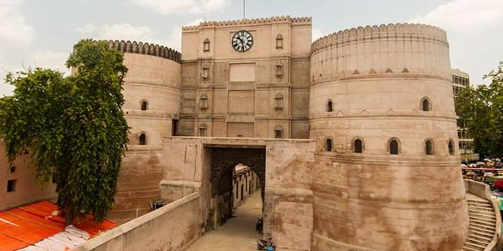
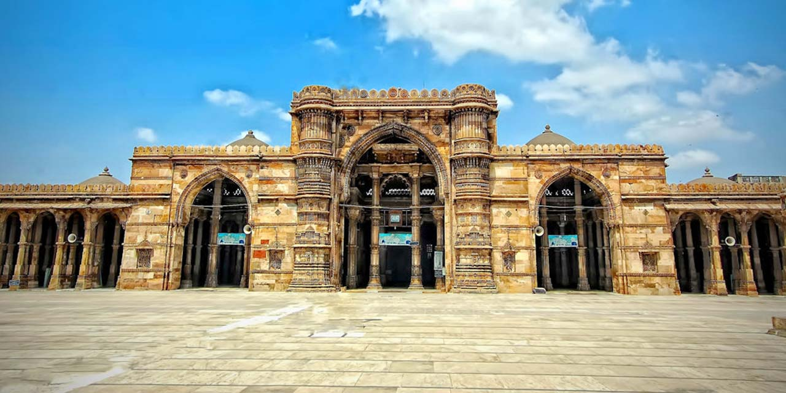

Sabarmati Ashram
The very first name that pops into the mind at the mention of Ahmedabad is that of Mahatma Gandhi and Sabarmati Ashram.

Bhadra Fort
It was in 1411 that the founder of the city of Ahmedabad, Sultan Ahmad Shah built Bhadra Fort. A popular tourist attraction now, the forts holds many stories within its walls.

Jama Masjid
Another architectural wonder created by Sultan Ahmed Shah, Jama Masjid is a top tourist place in Ahmedabad. The fort was built in the year 1423 by the Sultan,